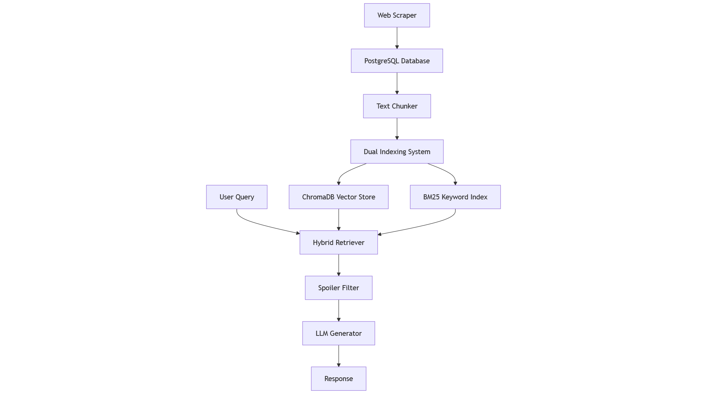
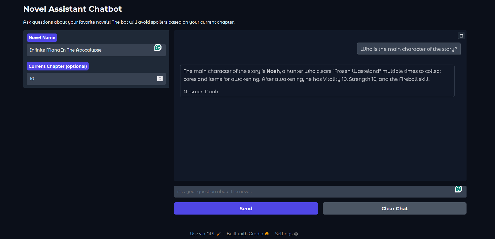

Novai QA : Construction d’un système de questions-réponses sur romans sans spoilers
Une approche basée sur RAG pour l’analyse de littérature longue
Aperçu du projet
Novai QA représente une approche novatrice pour gérer l’un des problèmes les plus difficiles dans la discussion littéraire : la gestion des spoilers. Ce système de génération augmentée par récupération (RAG) permet aux lecteurs de poser des questions sur des romans web tout en maintenant des limites strictes sans spoilers basées sur leur progression de lecture actuelle.
Le défi
Les romans web de longue durée, particulièrement ceux des plateformes comme novelfull.com, s’étendent souvent sur des milliers de chapitres avec des relations de personnages complexes et des développements d’intrigue complexes. Les lecteurs veulent fréquemment :
- Clarifier les relations entre personnages sans gâcher les développements futurs
- Comprendre des éléments complexes de construction du monde
- Obtenir des rappels sur les événements passés sans relire des sections entières
- Discuter des points d’intrigue avec confiance en matière de sécurité des spoilers
Les approches traditionnelles échouent parce qu’elles soit : 1. Ne fournissent aucune protection contre les spoilers 2. Nécessitent une curation manuelle du contenu 3. Ne peuvent pas gérer l’échelle de très longs romans 4. Manquent de compréhension contextuelle nécessaire pour des questions nuancées
Ma solution
J’ai développé un pipeline RAG sophistiqué qui combine :
- Web scraping intelligent pour l’acquisition automatisée de contenu
- Systèmes de récupération hybrides mélangeant recherche sémantique et par mots-clés
- Filtrage de spoilers basé sur les chapitres pour la conscience de progression de l’utilisateur
- Intégration LLM locale pour la confidentialité et le contrôle
- Chunking conscient du contexte pour une récupération d’information optimale
Architecture technique
Philosophie de conception du système
L’architecture suit une conception de pipeline modulaire, où chaque composant peut être optimisé et remplacé indépendamment :

Plongée profonde dans les composants principaux
1. Module de web scraping (scraper.py)
Le système de scraping gère la tâche complexe d’extraire le contenu de romans depuis novelfull.com tout en gérant :
async def refresh_database():
"""
Découverte interactive de romans et extraction de contenu par lots
"""
# Sélection de roman guidée par l'utilisateur
keyword = input("Please enter a keyword to search for novels: ")
# Scraping conscient de Cloudflare avec des en-têtes factices
headers = header.generate()
connector = aiohttp.TCPConnector(limit=20)
# Extraction de chapitres concurrente
tasks = [get_page_content(session, url) for url in chapter_urls]
chapter_contents = await asyncio.gather(*tasks)Fonctionnalités clés :
- Gestion de la protection Cloudflare : Génération d’en-têtes dynamiques et pooling de connexions
- Traitement concurrent : Opérations async pour des téléchargements par lots efficaces
- Validation de contenu : Détection automatique et retraitement des téléchargements échoués
- Intégration base de données : Insertion directe avec résolution de conflits
2. Système de chunking intelligent (chunker.py)
L’algorithme de chunking représente l’un des aspects les plus sophistiqués du système :
def chunk_text(text, max_chunk_size=512, overlap=200, tokenizer=None):
"""
Chunking adaptatif avec préservation du contexte
"""
paragraphs = segment_text(text, max_chunk_size, overlap, tokenizer)
# Gestion sophistiquée du chevauchement
while current_chunk_size <= size + overlap:
if j >= 0 and current_chunk_size <= max_chunk_size - paragraphs[j][1]:
current_chunk.insert(0, paragraphs[j][0])
current_chunk_size += paragraphs[j][1]Conception de l’algorithme :
- Fallback multi-niveau : Segmentation Paragraphe → Phrase → Sous-phrase
- Chevauchement conscient du contexte : Détection intelligente des limites pour préserver le sens
- Dimensionnement précis des tokens : Utilise le tokenizer du modèle réel pour un calcul de taille précis
- Traitement adaptatif : Gère automatiquement les structures de contenu variées
3. Système de récupération hybride (retriever.py)
Le système de récupération combine deux approches complémentaires :
Recherche sémantique (ChromaDB) :
def retrieve_context_chroma(query, novel_name, model, spoiler_threshold=None, k=5):
query_prompt = "Represent this sentence for searching relevant passages: "
query_vector = model.encode(query_prompt + query)
query_vector = query_vector / np.linalg.norm(query_vector)
if spoiler_threshold:
results = collection.query(
query_embeddings=[query_vector.tolist()],
where={"chapter_id": {"$lte": spoiler_threshold}}
)Recherche par mots-clés (BM25) :
def retrieve_context_bm25(query, novel_name, spoiler_threshold=None, k=5):
# Pipeline de prétraitement avancé
query_tokens = preprocess(query) # Lemmatisation + étiquetage POS
bm25 = BM25Okapi(tokenized_docs)
scores = bm25.get_scores(query_tokens)Stratégie de fusion : Le système combine les résultats des deux méthodes, exploitant les forces de chacune :
- La recherche sémantique excelle dans les requêtes conceptuelles et les synonymes
- BM25 capture les correspondances exactes de noms et la terminologie spécifique
- Les résultats combinés fournissent une couverture complète
4. Filtrage conscient des spoilers
Le mécanisme de protection contre les spoilers fonctionne au niveau de la requête de base de données pour l’efficacité :
# Filtrage basé sur les chapitres dans PostgreSQL
cursor.execute("""
SELECT chunks.id, chunks.chunk_content
FROM chunks
JOIN chapters ON chunks.chapter_id = chapters.id
WHERE chapters.novel_id = %s AND chapters.chapter_number <= %s
""", (novel_id, spoiler_threshold))Cette approche assure :
- Efficacité au niveau de la base de données : Le filtrage se produit pendant la récupération, pas en post-traitement
- Contrôle précis : Limites de spoilers granulaires par chapitre
- Agence utilisateur : Protection optionnelle contre les spoilers basée sur la préférence utilisateur
5. Génération de réponses (generator.py)
Le système de génération utilise des prompts soigneusement conçus pour assurer des réponses fondées :
system_prompt = """You are a RAG system designed to answer questions about novels
using only the retrieved excerpts from the book. Your responses must be grounded
in the supplied content, without guessing or adding external information."""Fonctionnalités clés :
- Fondation stricte : Réponses limitées au contenu récupéré seulement
- Langage naturel : Aucune exposition des mécaniques système aux utilisateurs
- Gestion des chaînes de pensée : Traitement spécial pour les modèles basés sur le raisonnement
- Incertitude gracieuse : Admission honnête quand l’information n’est pas disponible
Défis d’implémentation et solutions
Défi 1 : Gérer les romans très longs
Problème : Les romans avec plus de 1000 chapitres génèrent des dizaines de milliers de chunks, rendant la récupération coûteuse en calcul.
Solution :
- Filtrage hiérarchique : Filtrage au niveau base de données des romans et chapitres avant la recherche sémantique
- Traitement par lots : Génération d’embeddings optimisée avec accélération CUDA
- Pooling de connexions : Gestion efficace des ressources de base de données
Défi 2 : Préservation du contexte entre les chunks
Problème : L’information critique s’étend souvent au-delà des limites de paragraphes, conduisant à un contexte fragmenté.
Solution :
# Chevauchement intelligent avec conscience du contexte
j = i - 1
while current_chunk_size <= size + overlap:
if j >= 0 and current_chunk_size <= max_chunk_size - paragraphs[j][1]:
current_chunk.insert(0, paragraphs[j][0]) # Ajouter le contexte précédentCela assure que chaque chunk contient suffisamment de contexte pour une compréhension autonome.
Défi 3 : Variations des noms de personnages
Problème : Les romans web utilisent souvent plusieurs noms/titres pour les personnages, rendant la récupération incohérente.
Solution : Système de récupération hybride où :
- BM25 capture les correspondances exactes de noms et variations
- La recherche sémantique capture les références conceptuelles
- Les résultats combinés assurent une couverture complète des personnages
Défi 4 : Précision des limites de spoilers
Problème : Déterminer les limites exactes de spoilers tout en maintenant l’efficacité de récupération.
Solution : Granularité au niveau chapitre avec filtrage au niveau base de données :
- Contrôle utilisateur : Spécification explicite de chapitre
- Approche conservatrice : En cas d’incertitude, prioriser la sécurité des spoilers
- Implémentation efficace : Optimisation des requêtes PostgreSQL
Analyse de performance
Métriques et benchmarks
Performance de chunking :
- Roman moyen (500 chapitres) : ~15-20 minutes de temps de traitement
- Génération de chunks : ~5,000-8,000 chunks par roman
- Usage mémoire : ~2-4GB pendant le pic de traitement
Vitesse de récupération :
- Traitement de requête : <2 secondes en moyenne
- Recherche hybride : 10 chunks de chaque méthode (20 total)
- Requêtes base de données : <100ms avec indexation appropriée
Qualité de réponse :
- Précision fondée : Haute adhérence au matériel source
- Cohérence contextuelle : Performance forte due à la stratégie de chevauchement
- Sécurité spoilers : 100% quand le seuil est correctement défini
Considérations de scalabilité
Limites actuelles : - Focus sur un seul roman (par conception)
- Exigences mémoire GPU pour les embeddings
- Mise à l’échelle du stockage PostgreSQL avec le nombre de romans
Opportunités d’optimisation :
- Cache des chunks fréquemment accédés
- Embeddings pré-calculés pour les requêtes communes
- Texte prétraité (lemmatisé + étiquetage POS) pour les requêtes communes
- Traitement distribué pour plusieurs romans
Conception de l’expérience utilisateur
Philosophie d’interface
L’interface Gradio priorise la simplicité tout en fournissant les contrôles essentiels :
with gr.Blocks(title="Novel Assistant Chatbot", theme=gr.themes.Soft()) as demo:
novel_name = gr.Textbox(label="Novel Name")
spoiler_threshold = gr.Number(label="Current Chapter (optional)")
chatbot = gr.Chatbot(height=500, bubble_full_width=False) Figure : Interface Novai QA au lancement, montrant la conception minimaliste et l’entrée de contrôle des spoilers.
Principes de conception :
- Charge cognitive minimale : Contrôles essentiels uniquement
- Contrôle de spoilers clair : Mécanisme d’entrée de chapitre évident
- Flux conversationnel : Interface de chat naturelle
- Feedback immédiat : Génération de réponse en temps réel
Patterns d’interaction
Flux utilisateur typique :
1. Sélection de roman : Entrer le nom du roman (correspondance exacte requise)
2. Réglage de progression : Spécifier le chapitre actuel (optionnel mais recommandé)
3. Requête naturelle : Poser des questions en langage conversationnel
4. Exploration itérative : Suivre avec des questions liées
Exemples d’interactions :
Utilisateur : "Qui est le personnage principal dans Supreme Magus ?"
Système : "Basé sur le contenu de l'histoire, le personnage principal est Lith..."
Utilisateur : "Quelles sont ses capacités ?"
Système : "Lith démontre plusieurs capacités clés incluant..."Stack technique et dépendances
Technologies principales
Framework backend :
- Python 3.12+ : Langage de développement principal
- PostgreSQL : Stockage de données primaire
- ChromaDB : Recherche de similarité vectorielle
- Ollama : Service LLM local
Machine Learning :
- SentenceTransformers : Génération d’embeddings
- NLTK : Pipeline de prétraitement de texte
- rank-bm25 : Implémentation de recherche par mots-clés
Technologies web :
- Gradio : Interface interactive
- aiohttp : Web scraping asynchrone
- BeautifulSoup : Parsing HTML
Exigences matérielles
Spécifications minimales :
- 16GB RAM (pour les modèles d’embeddings)
- GPU compatible CUDA (recommandé)
- 10GB+ stockage (varie selon le nombre de romans)
- Internet stable (pour le scraping initial)
Configuration optimale :
- 32GB+ RAM
- RTX 3080/4080 ou équivalent
- Stockage SSD pour la performance de base de données
- Connexion internet haut débit
Rétrospective de développement
- Complexité de chunking sous-estimée : Initialement assumé être une tâche simple, l’implémentation du chunking basé sur le chevauchement s’est révélée significativement plus complexe. Développement d’une solution personnalisée après avoir fait face à de multiples cas limites dans la préservation du contexte.
- Exploration de vector store : Commencé avec FAISS mais abandonné en raison du manque de filtrage natif des métadonnées. Considéré Milvus, mais il n’était pas disponible sur Windows au moment du développement.
- Réalisation de récupération hybride : BM25 a été introduit pour compléter la recherche sémantique mais a donné de mauvais résultats sans lemmatisation. Une lemmatisation efficace nécessitait l’étiquetage POS, ce qui ajoutait une surcharge de traitement.
- Impact matériel sur les embeddings : L’encodage de ~1000 chapitres avec un GPU a pris ~40 minutes ; le temps CPU estimé dépassait 8 heures. A souligné l’écart critique de performance entre CPU et matériel compatible CUDA.
- Migration de base de données : Transition de SQLite vers PostgreSQL pour un filtrage robuste et des requêtes relationnelles. Cependant, ChromaDB a continué à utiliser SQLite3 localement comme backend.
- Logging opérationnel : Introduction du logging au niveau application pour surveiller plus systématiquement les processus de scraping, chunking et récupération.
Leçons apprises et directions futures
Insights clés
- La stratégie de chunking compte : La qualité de segmentation de texte impacte directement la qualité de récupération
- Les approches hybrides gagnent : Combiner recherche sémantique et par mots-clés fournit une couverture supérieure
- L’agence utilisateur est critique : Le contrôle des spoilers doit être piloté par l’utilisateur, pas assumé par le système
- Les avantages du traitement local : Les avantages de confidentialité et contrôle surpassent la commodité des API cloud
Améliorations futures
Améliorations techniques :
- Reranking avancé : Scoring de pertinence basé sur LLM pour le contenu récupéré
- Support multi-romans : Gestion concurrente de multiples sources de romans
- Conversation multi-tour : Traitement conscient du contexte pour les requêtes de suivi
- Mémoire de conversation : Contexte persistant à travers les sessions de chat
- Système de mise à jour automatique : Synchronisation périodique du contenu avec les bases de données de romans
Expérience utilisateur :
- Progressive Web App : Interface optimisée mobile
- Intégration progression de lecture : Suivi automatique des chapitres
- Fonctionnalités sociales : Discussions partagées avec conscience des spoilers
- Personnalisation : Apprentissage et adaptation des préférences utilisateur
Scalabilité et performance :
- Couche de cache : Intégration Redis pour les requêtes fréquentes
- Traitement distribué : Génération d’embeddings multi-GPU
- Développement API : Endpoints REST pour intégrations tierces
- Containerisation : Déploiement Docker pour mise à l’échelle facile
Conclusion
Le projet Novai QA démontre l’application pratique de techniques NLP modernes pour résoudre des problèmes du monde réel dans la consommation de littérature numérique. En combinant web scraping, traitement de texte avancé, systèmes de récupération hybrides et génération LLM locale, le système fournit une solution unique au défi de gestion des spoilers.
Le projet présente plusieurs compétences techniques clés :
- Développement full-stack : De la conception de base de données à l’interface web
- Ingénierie de pipeline NLP : Workflows de traitement de texte bout en bout
- Architecture de système RAG : Récupération et génération d’information modernes
- Programmation asynchrone : Traitement concurrent efficace
- Optimisation de base de données : Performance de requêtes et modélisation de données
Plus important encore, il répond à un besoin utilisateur genuine avec une approche réfléchie et techniquement solide qui priorise le contrôle utilisateur et la sécurité du contenu.
Ce projet fait partie de mon portfolio démontrant l’expertise en NLP, systèmes RAG et développement full-stack. Le code complet et la documentation sont disponibles sur GitHub.